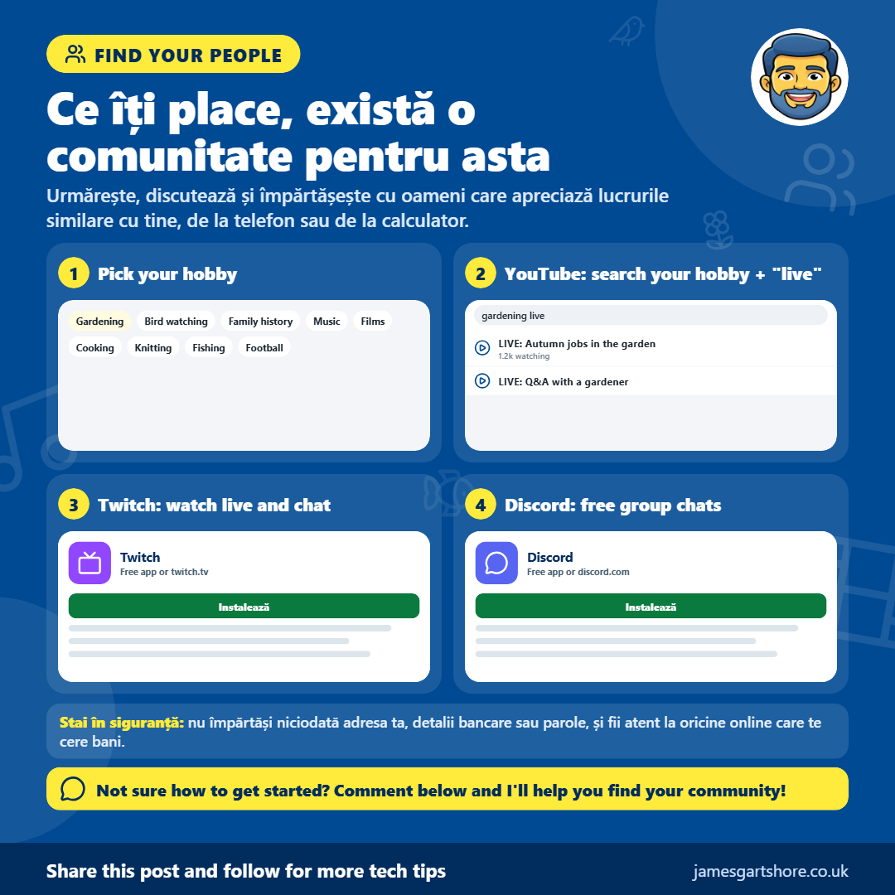

Online Communities
De la James Gartshore · · Conectarea în internet și menținerea conexiunilor
Salutare tuturor, vreau să împărtășesc ceva ce mulți oameni nu realizează că există.
Indiferent ce te interesează, fie că este grădinărit, observații de păsări, istorie de familie, muzică, filme, gătit, pântecat, pescuit sau fotbal, aproape sigur există o comunitate online de oameni care iubesc același lucru. Este o modalitate excelentă de a învăța ceva nou, de a discuta și de a te simți parte din ceva, mai ales dacă trăiești singur sau nu poți ieși atât de mult cum ai dori.
Twitch (twitch.tv) este un site și o aplicație unde oamenii transmit live, iar toți cei care caută pot discuta împreună într-o casetă lângă video. Nu este doar gaming. Există camere live de hrană pentru păsări, oameni care grădinăresc, gătesc, pictă și multe altele. YouTube funcționează în mod similar. În plus de videoclipuri normale, mulți oameni fac transmisiuni live cu un chat alături. Pur și simplu caută pasiunea ta cu cuvântul "live" după ea, de exemplu, "observații de păsări live".
Discord este o aplicație gratuită pentru chat-uri grup, numite servere. Fiecare server este ca un club pentru un interes anume, unde membrii postează mesaje și fotografii și pot chiar să se alăture chat-urilor vocale pentru a vorbi. Mulți streameri și YouTubers au propriul server Discord, iar de obicei vei găsi un link de invitație sub videourile sau transmisiunile lor.
Toți sunt gratuite. Trebuie să creezi un cont dacă vrei să discuteți, dar poți doar să vizitezi cât vrei pentru a te obișnui. Nimeni nu se oprește la oamenii care doar caută, iar mulți oameni o fac.
Ca orice altceva online, fii în siguranță. Nu împărtăși niciodată adresa ta, detalii bancare sau parole, și fii atent la cineva care schimbă conversația în mesaje private și apoi începe să ceră bani sau carduri cadou, indiferent cât de prietenoare par.
Dacă ai nevoie de ajutor pentru a începe sau pentru a găsi o comunitate pentru pasiune, doar trimite-mi un mesaj și voi face tot posibilul să te ajut.
Sper că vă ajută, și nu ezitați să îl transmiteți oricui care ar putea să îl găsească util.